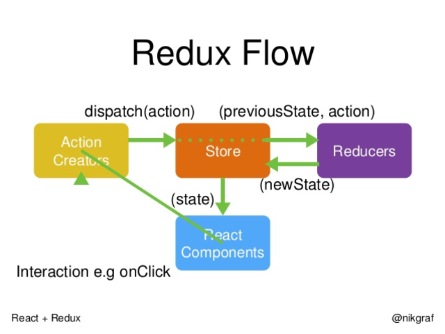

Hajime !
Le monde est asynchrone
Reactive manifesto

Message driven
Performances/threading
Programmation reactive
- Reactive eXtension
- Stream processing
- Modèle de thread
- Objectif
Comment modéliser un flux de données ?
Marble diagrams
Stream simple

Stream avec erreur

Stream avec opération

Et en RX ?
Observable.of('A','B','C')
.map(value => value.toLowerCase())
.catch((err=>console.error(err.message)))
.subscribe(value => console.log(value));
Result
'a' 'b' 'c'
Mais pourquoi faire ça ?
- Eviter le callback hell
- Gérer de multiples évenememnts
- Avoir une approche déclarative
- Facilter la programmation fonctionnelle
Mais à quel point est-ce puissant ?
Example 1 : Handle async requests
eazy peazy
CODE angular, de la requete jusqu'au template,
mise en cache avec un share (transformation en observable HOT)
Example 2 : Handle multiple clicks on button
eazy peazy
CODE JS, transformation d'un event en observable, handle du double click
Système réactif

Kezako?
- Pourquoi se limiter à certaines partie ?
Pattern reactor

Pattern reactor
- Task queue
- Event loop
- Request handler
Implémentation front : Redux
Intérêts
Supprimer le dirty checking
Implémentation back: Vertx

Intérêts
Capacité à monter en charge
Liens intéressants
D'autres solutions
- Actor
- green thread

Questions ?
Licence
Pour ce qui concerne tous les contenus que nous avons produits dans cette présentation :
Découvrir les subtilités de Cassandra de Viseo - Pierre Bourret & Michel Barret est mis à disposition selon les termes de la licence Creative Commons Attribution - Pas d’Utilisation Commerciale 4.0 International.
Fondé(e) sur une œuvre à https://github.com/barmic/viseo-take-an-hour_cassandra.git.